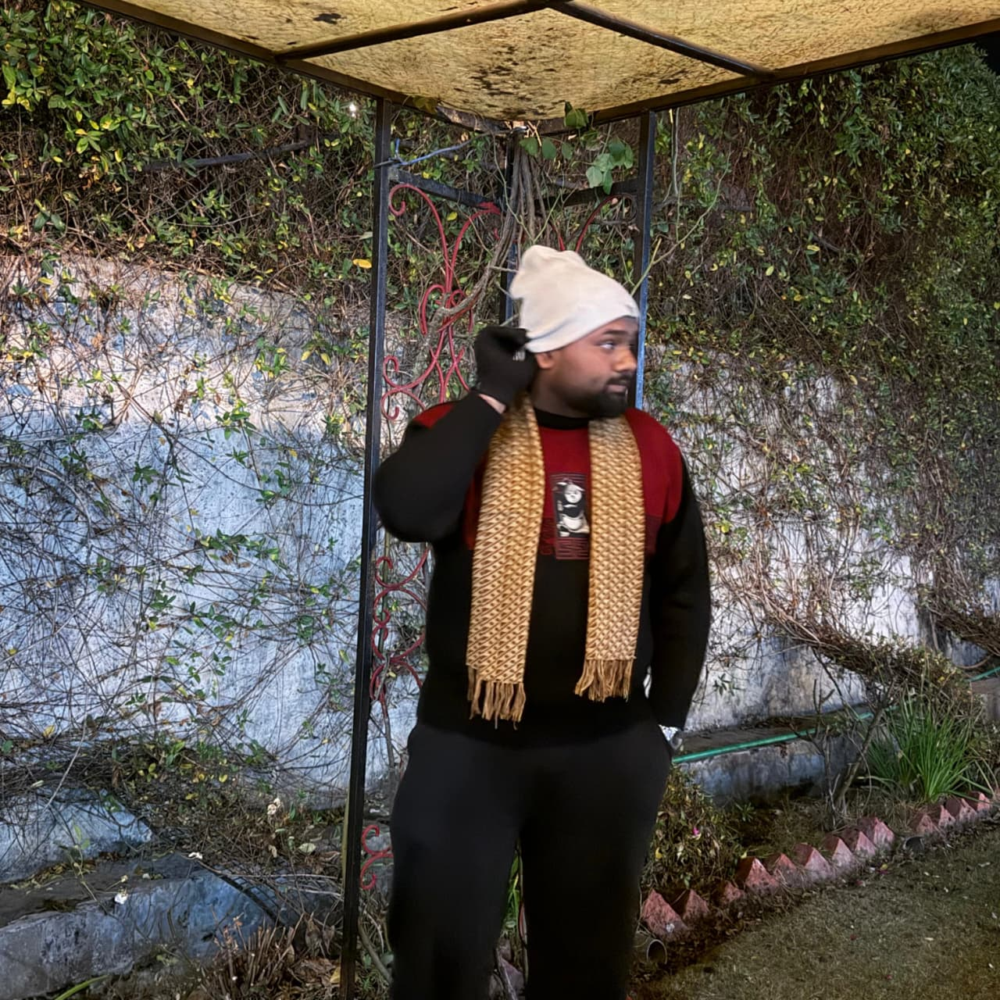
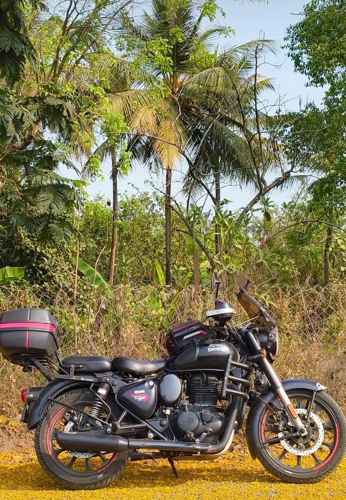

Java
Core Java, OOP, collections, exception handling, and service logic.
SDE 1 Candidate | Java Backend | REST APIs | SQL
I am Joshua Binoy Cheliparambil, a B.E. Information Technology student moving from analytics into software development. I bring Java, OOP, DSA, SQL, REST API thinking, and real-world data pipeline experience into SDE-1 work.
Rows cleaned and modeled
OOP, collections, exceptions
REST patterns and Firebase

Java Backend Engineer
OOP
Clean structureSQL
Data accessDSA
Problem solvingAbout
I write structured code and think in systems: inputs, validation, transformation, storage, APIs, and reliable output. My analytics background gives me a practical edge because I have already worked with messy datasets, reporting pipelines, correctness checks, and stakeholder-ready results.
My target role is SDE-1 with a Java backend focus. I am building on Core Java, Spring Boot fundamentals, REST APIs, JDBC, Maven, Git/GitHub, SQL, and React basics while continuing to strengthen DSA, OOP, DBMS, OS basics, and clean code habits.
What I bring is simple: curiosity, consistency, fast learning, and the discipline to debug until the system behaves the way it should.
Engineering Stack
Skill icons are loaded from web CDN sources, with a stack focused on SDE-1 Java backend work and full-stack foundations.
Core Java, OOP, collections, exception handling, and service logic.
Fundamentals of REST controllers, service layers, and backend structure.
Joins, grouping, reporting queries, validation, and data access thinking.
DOM work, validation, interactions, game logic, and browser behavior.
Component basics, props/state thinking, and responsive UI composition.
Pandas pipelines, clustering workflows, and repeatable data processing.
NoSQL storage exposure and API-driven web application integration.
Version control, collaboration, documentation, and code review readiness.
Selected Work
Ingested and cleaned 50,000+ rows with SQL and Power Query, modeled KPIs, and applied DAX logic that mirrors backend reporting modules.
Built a modular Python pipeline over 25,000+ customer records using RFM analysis and K-Means, showing clean data-processing design.
Created responsive forms, client-side validation, and Firebase storage while learning request-response flows and API-driven structure.
Interactive Game
A small JavaScript game inspired by Java debugging: collect green commits, avoid red bugs, and race the timer. It demonstrates event handling, state updates, keyboard controls, collision detection, scoring, and sound design in a playful way.
Beyond Code
Riding has trained patience, awareness, calm decision-making, and respect for systems. I bring that same steady focus into debugging, learning, and building software.


Engineer mindset
Focus
Stay aware
Calm
Think clear
Drive
Keep moving
Get In Touch
Mumbai, Maharashtra - +91 9136020220 - joshuacheliparambilb@gmail.com